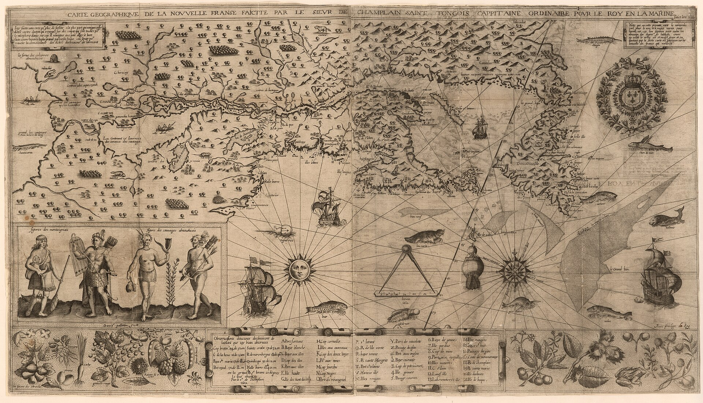

Choose a modelChoisir un modèle
Pick two models. See where each one is stronger.Choisissez deux modèles. Voyez où chacun est le plus fort.
Where each one is strongerOù chacun est le plus fort
Radar: the farther a point is from the centre, the higher the score. By skill: one row per skill, each model is a marker on a line. Table: the same numbers, strongest starred.Radar : plus un point est loin du centre, plus le score est élevé. Par compétence : une ligne par compétence, chaque modèle est un repère sur une ligne. Tableau : les mêmes chiffres, le plus fort marqué d’une étoile.
Scores in %.Scores en %.
The comparison needs JavaScript. This table of six models works without it.La comparaison demande JavaScript. Ce tableau de six modèles fonctionne sans.
| RankRang | ModelModèle | OverallGénéral(%) | FeelingsSentiments(%) | ReasoningRaisonnement(%) | QuestionsQuestions(%) | GrammarGrammaire(%) | MeaningSens(%) | PronounsPronoms(%) | QuebecQuébécois(%) |
|---|---|---|---|---|---|---|---|---|---|
| 3 | Claude Opus 4 | 73.1 | 86.3 | 73.9 | 40.8 | 89.9 | 48.8 | 86.7 | 95.6 |
| 12 | GPT-4o | 69.2 | 84.7 | 74.5 | 31.5 | 90.0 | 41.7 | 70.6 | 88.8 |
| 27 | Qwen3 14B | 50.5 | 79.6 | 52.5 | 33.6 | 49.3 | 52.1 | 54.2 | 30.8 |
| 37 | Meta Llama 3.1 8B Instruct | 44.4 | 69.2 | 46.1 | 23.7 | 63.5 | 35.1 | 49.9 | 14.7 |
| 73 | Llama 3.2 1B Instruct | 35.5 | 46.4 | 37.1 | 17.6 | 47.3 | 29.2 | 51.0 | 14.1 |
| 80 | Random guessingTirage au hasard | 34.4 | 42.0 | 34.5 | 19.6 | 50.2 | 28.8 | 49.5 | 11.1 |

Worth knowingÀ savoir
Read the notesLire les notes
n/a is not zero.n.d. n’est pas zéro.
It means the model has no result for that test.Cela signifie que le modèle n’a pas de résultat pour ce test.
API models and open models are not run the same way.Les modèles par API et les modèles ouverts ne sont pas exécutés de la même façon.
Some open models were run in a lighter form, so a full run could score a little differently.Certains modèles ouverts ont été exécutés sous une forme allégée ; une exécution complète pourrait donner des scores un peu différents.